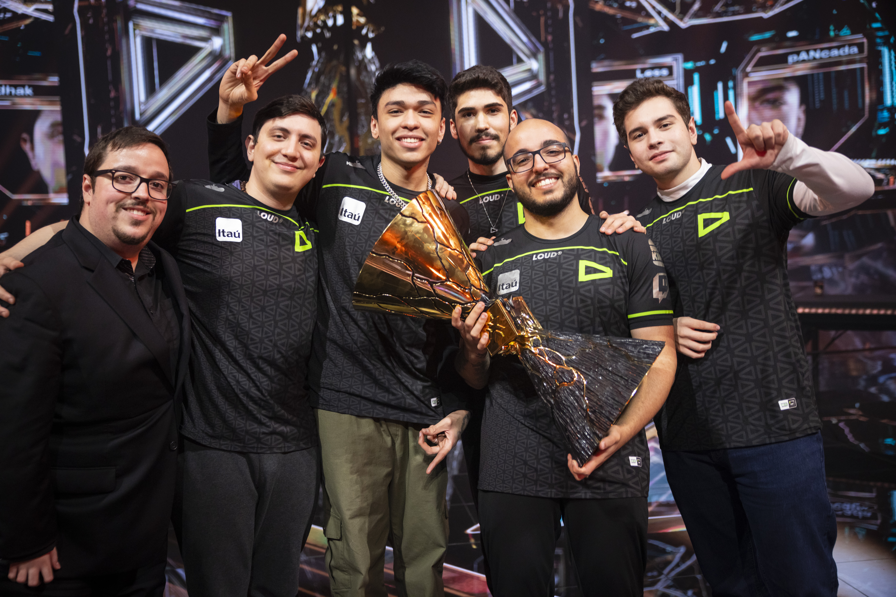

Conquistas da LOUD no VALORANT
A LOUD construiu uma das histórias mais marcantes do VALORANT brasileiro. Em 2022, logo em seu primeiro ano competitivo, a equipe venceu as duas etapas do Challengers Brazil e conquistou seu maior título naquele momento: o VALORANT Champions 2022, em Istambul. Na grande final, a LOUD derrotou a OpTic Gaming por 3 a 1 e se tornou a primeira equipe brasileira campeã mundial de VALORANT.
Em 2023, a LOUD continuou entre as principais equipes do mundo e conquistou o VCT Americas, sendo a primeira campeã da liga internacional das Américas. Entre seus principais resultados também estão campanhas de destaque em torneios internacionais, incluindo a 3ª colocação no VALORANT Champions 2023. Em 2026, a organização voltou a disputar o Champions após três anos, garantindo a classificação através do VCT Americas Stage 2.
Principais conquistas:
VALORANT Champions 2022 - Campeã Mundial
VCT Americas 2023 - Campeã
Challengers Brazil 2022 - Etapa 1 - Campeã
Challengers Brazil 2022 - Etapa 2 - Campeã
VALORANT Champions 2023 - 3º lugar
VCT Americas Stage 2 2026 - Vice-campeã
VALORANT Champions 2026 - Classificada para o Mundial
